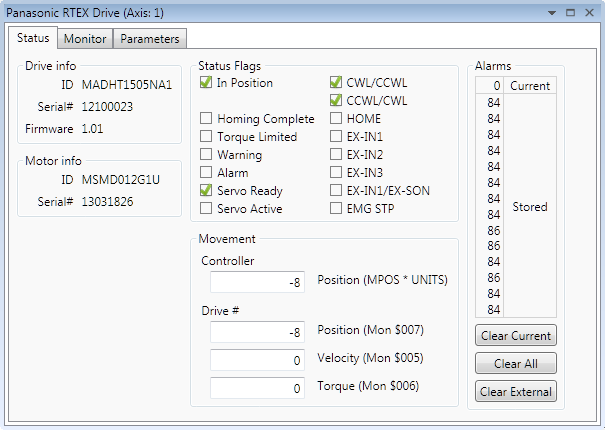
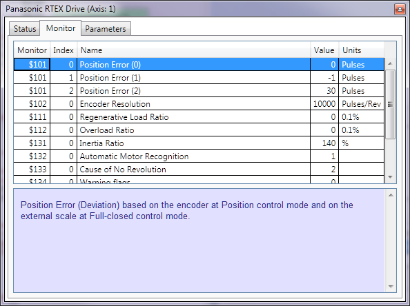
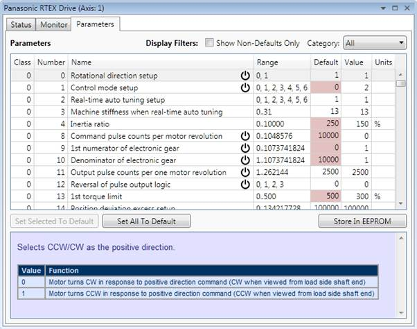
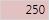

The Status Tab shows the current status of the drive, giving data about the drive and motor including the drive status flags and stored alarms. Buttons are provided to clear the alarms.

The Monitor Tab displays all drive monitor values in a table together with a description of the currently selected monitor.

The Parameters Tab shows the values of the drive parameters together with a description of the currently selected parameter. The values displayed can be filtered using the drop-down list control in the top-right of the dialog (pictured showing "All" parameters above). The options for the filter depend on the drive model.
Parameters which have non-default values are coloured like this  to make the easily identifiable. Some parameters require the drive to be power cycled before a change will take effect. These parameters are marked with the symbol .
Parameter values can be edited (unless the parameter is read-only) by clicking on the value in the parameter grid end editing it.
The "Store in EPROM" button is used to store the current drive parameters into EPROM memory on the drive so that these parameter values will be set when the drive next powers up.